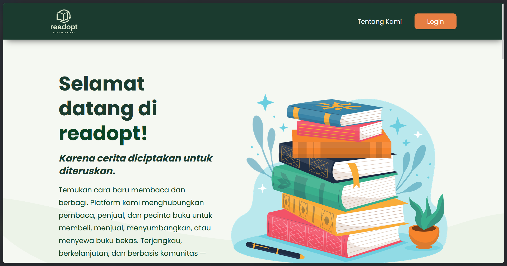

readopt
2025Project Manager & UI/UX Designer
readopt is an online marketplace and rental platform for pre-owned books, letting users buy, sell, and rent used books seamlessly. Led the project lifecycle and team workflows to hit every milestone, and designed a cohesive Figma system with a soothing color palette for long-term reading comfort.